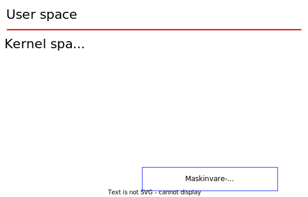
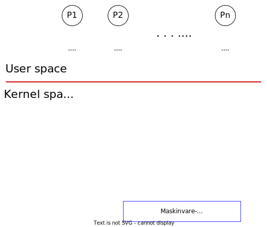
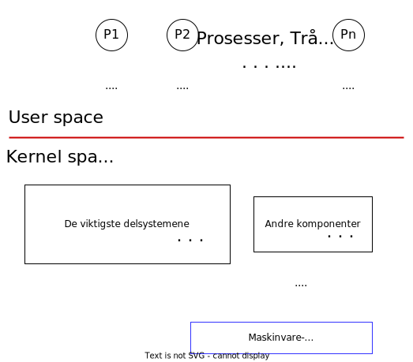
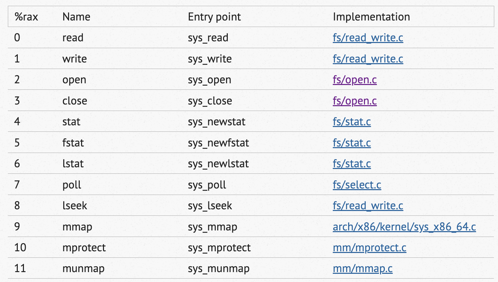
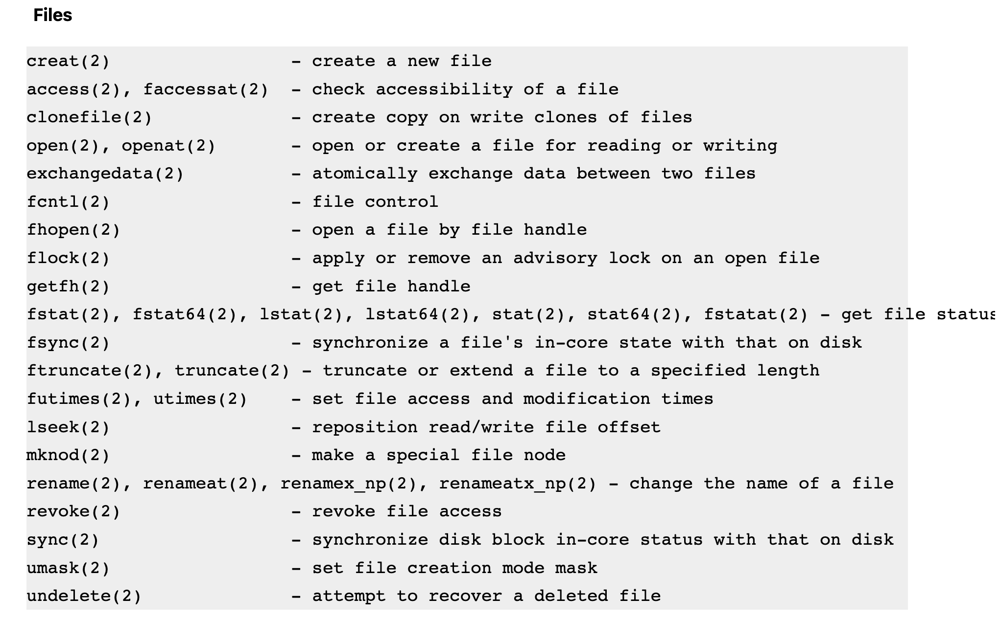
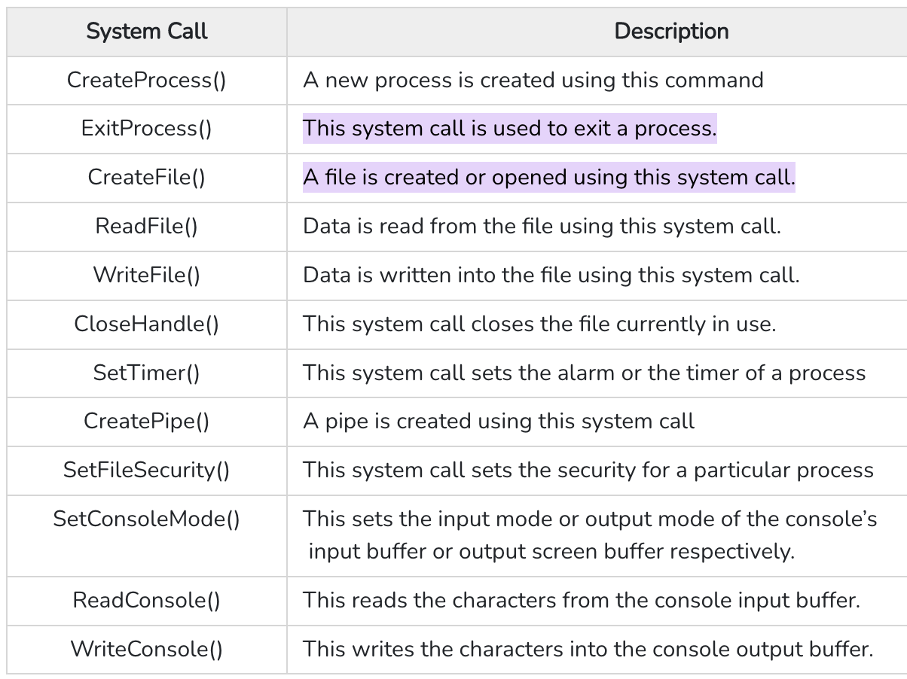
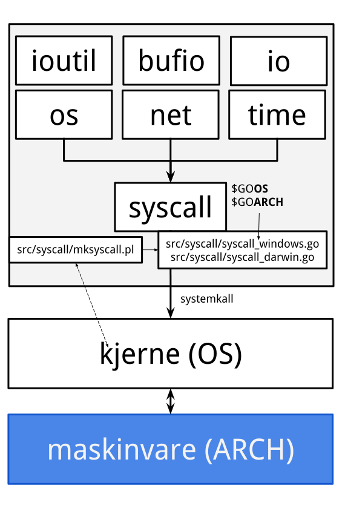

OBS! Siden er under utvikling (14. februar 2023).
Filer
Etter å ha lest denne web-siden, skal du:
- kunne forstå filabstraksjon i Unix/Linux (og delvis macOS) operativsystemer
- kjenne til grunnleggende systemkall for filadministrasjon i Linux (og kunne søke selv opp informasjon om tilsvarende for Windows)
- kunne tolke Go kode for filadministrasjon
1 Innledning
Selv om vi her er mest interessert i filbehandling fra Go programmeringsmiljøet, trenger vi litt innsikt i lavere nivå mekanismer for å kunne med større selvtillit bruke Go sine pakker. Vi skal først avklare hva menes "brukerrom" (en. user space) og "kjernerom" (en. kernel space). Så skal vi se på hva et systemkall er og drøfte noe eksempler relatert til bruken av filsystemet fra (eller gjennom) et operativssystem. Ved bruk av kommandolinje skal vi se på noen grunnleggende detaljer til filsystemet i Linux. Windows brukere kan bruke GitBash (er et eget program utviklet av en tredje part, så garanteres ikke at alt virker) eller installere WSL (Windows Subsystem for Linux).
Mappe- og filstrukturer i operativsystemer er også beskrevet i teksten for de første seminaroppgavene. Her antar vi at leseren er kjent med absolutt og relativ sti, gjeldende mappe og grunnleggende kommandoer for å navigere og administrere både Windows, macOS og Linux filsystemer.
2 Brukerrom og kjernerom
Figur 1. Brukerrom og kjernerom i OS arkitekturen.
I OS modeller skiller man mellom brukerrom, hvor brukere kan utføre sine programmer, og kjernerom, hvor operativsystemets programmer utføres. Kjernerommet må være aktivert, før brukere kan utføre sine programmer. Gjennom kjernerommet får brukeren tilgang til maskinvaren. Denne modellen implementeres for multibruker- og multiprogram-miljøer (eller multiprogrammeringsmiljøer hvis man oversetter direkte fra engelsk).
Figur 2. Brukerrom med prosesser og kjernerom i OS arkitekturen.
Multibruker-miljø er selvforklarende, men multiprogrammeringsmiljø betyr at flere programmer kan utføres tilsynelatende samtidig (P1 - Pn i Figur 2 står for prosesser, som da tilsvarer hvert program, som ønsker å starte fra brukerrommet). Tilsynelatende fordi at de fleste forbrukersystemer har kun en prosessor, som kan kun utføre en instruksjon av gangen (meget simplifisert forestilling, men ikke veldig lagnt fra hvordan det i realiteten foregår). En analogi ville vært en kø ved en kasse i en butikk, hvor kassepersonell behandlet kundene slik at hver kunde fikk slått inn en vare og måtte gå bak i køen igjen og vente før alle andre har fått slått inn en vare hver. I dette konkrete scenarioet ville de med færrest varer kommet fortere gjennom, mens de med mange varer hadde måttet vente noe lenger. Hvis ikke ønsket å få mye klager fra kunder med mange varer, kunne man enten åpne en annen kasse (hvis det finnes ressurser), eller utvikle et prioritetssystem, hvor kunder med spesifikk antall varer fikk en prioritet og kunne, for eksempel, fått slått inn 2 varer på hver runde. Den generelle gjennomstrømningen hadde vært avhengig av hvilken type kunder er mest og av selve algoritmen. Man kunne gjennomført målinger å funnet en optimal algoritme, som minimaliserer behandlingstid for de fleste type kunder.
Kjernerommet er representert med mange datastrukturer og egne prosesser som enten venter på noen input (både fra brukerrommet og maksinvaren) eller utfører oppgaver gitt fra "brukerrommet" eller diverse andre oppgaver for å holde systemet i en brukbar (logisk for brukeren) tilstand.
Figur 3. Brukerrom og kjernerom med elementer i OS arkitekturen.
For at systemet skal kunne funksjonere, må kode både for kjernen og brukerprogrammer være lagret i det primære minnet (RAM). I modellens kontekst, så snakker man vanligvis om et virtuelt minne (kort sagt er det en mengde programmer, som skaper et grensesnitt for andre programmer mot det fysiske minne). Vi kaller de for VAS eller Virtual Address Space. En vanlig design er å gi programmene et inntrykk at de har tilgang på et meget stort adresserom, for eksempel, på 32-bits systemer er det vanligvis 4 Gibibytes (for 64-bits systemer kan det varierer fra OS til OS, men kan være rundt 8 Terabytes) tilsynelatende tilgjengelig for hvert program. Kjernen deler ikke adresserom med brukerprogrammene.
3 Systemkall
Vi må la den blå boksen i våre figurene representere all maskinvare, som er tilgjengelig på datasystemet, dvs. skjerm, tastatur, vår disker for fillagring, våre blåtann kontakter, våre nettverkskort og selvsagt også prosessoren (eller flere) og det flyttige, primære minne, som kan ikke beholde noen kode når strømmen er slått av.
For at vi skal kunne utføre hvilken som helst oppgave på vårt datasystem, må våre programmer bruke de programmene som ligger (utfører, selv om de fleste "står stille") i kjernens fysiske adresserom og har mulighet til å kommunisere med maskinvaren. Alle miljøer med et operativsystem, inneholder egne biblioteker med funksjoner som man kaller for systemkall. Disse er implementert enten på det programmeringsspråket som operativsystemkjernen er implementert på, eller et assemblerspråk (ikke vanlig), som er ulikt for hver maskinvarearkitektur. For eksempel, Linux distribusjoner inneholder et bibliotek, som heter glibc. I dette biblioteket er mange systemkall implementert. Figur 4 viser en syscall, som de også ofte blir kalt.
Figur 4. Systemkall fra brukerrommet
Linux har ca. 300 slike systemkall, macOS 400-500 og Windows ca. 2000.
Figur 5. Noen systemkall i Linux (Filippo Valsorda, 2023)
Se også et søkbart registeret søkbart register med lenker direkte til Linux kjernekode.
Figur 6. Systemkall i macOS for filadministrasjon (What System Calls Does MacOS Have?, 2017)
Figur 7. Noen systemkall i Windows (System Calls in Unix and Windows, 2020)
En programmerer trenger vanligvis ikke å bruke systemkall direkte. De aktuelle operativsystemene har omfattende biblioteker, som har pakket inn systemkall i funksjoner som kan brukes gjennom et høyere nivå programmeringsspråk. Vi har allerede brukt disse funksjonene hver gang vi har utført et kommando på kommandolinje. Bare utførelsen av en ls kommando påkalte mer enn 100 systemkall. Noen ganger kan det allikevel være nyttig å kunne vite om systemkall. Spesielt hvis man anvender åpen kildekode programvare, så er ofte driver-programmer for spesifikk maskinvare ikke tilgjengelig. Nå som det er blitt mer utbredt å arbeide med IoT (Internet of Things), må man kunne koble til og administrere et stort spektrum av enheter. Da kan det være nødvendig å sette seg inn i flere detaljer.
4 Filadministrajon
Filadministrasjon er en av operativsystemets oppgaver. På et datasystem med multiprogrammering skjer mange ting tilsynelatende samtidig. Vanligivis har vi mange programmer åpne, og kildekoden for alle programmene ligger på filsystemet. Under seminar I så ble det nevnt forskjellige filsystemer, som de aktuelle OS-ene bruker. Windows bruker NTFS (forkortelse for “NT File System”), macOS bruker APFS (Apple File System) og Linux bruker ext4 (fourth extended filesystem). Vi har også nå sett at hvert OS har egne funksjoner (systemkall) for å lagre og hente informasjon til og fra disse filsystemene.
I Go, som har et kryss-platform kompilator, er systemkall for flere platformer tilgjengelig gjennom biblioteker, avhengig av hvilket format for den eksekverbare filen er ønskelig (Mach-O, PE/PE32+ eller ELF; se slide 28 fra dokumentet "IS-105 Operativsystemer" i Canvas). Det betyr at utvikleren kan velge formatet for den eksekverbare filen som blir skapt med go build ved å spesifisere OS og ARCH på følgende måte (hvis det er ønskelig å lage et program for Android, som bruker en Arm prosessor, for eksempel):
$ GOOS=android GOARCH=arm64 go build [eventuelt filnavn]
Kodefragment 1. Go kommando for kompilering og linking av programmer.
Go utviklingmiljøet inneholder funksjoner for de aller fleste systemkall som en utvikler skulle trenge.
Figur 8. Go model for systemkall (også på slide 39 fra dokumentet "IS-105 Operativsystemer" i Canvas).
Go utviklingmiljøet inneholder funksjoner for de aller fleste systemkall som en utvikler skulle trenge, ikke bare de som har med filsystemer å gjøre.
I Figur 8 ser vi blant annet pakken os. Denne pakken inneholder funksjoner som lar oss aksessere maskinvaren, som holder alt det nødvendige for at vi skal kunne oppfatte det som filsystem fra vårt "høye slott" (kommandolinje, Java eller Go). Hvis vi husker kommandoer som type nul > main.go for Windows cmd og touch main.go for Linux og macOS, så bruker disse kommandoene, blant annet, systemkall som CreateFile() i Windows og creat i Linux og macOS.
Et annet kommando vi har sett er hvordan å vise frem den gjeldende mappen, - echo %cd% for Windows cmd og pwd or Linux og macOS. I Go standardbiblioteket finnes det funksjon os.Getwd(). Som vi kan se, er funksjonen implementert i pakken os.
func Getwd() (dir string, err error)
Kodefragment 2. Signatur til funksjonen Getwd() fra Go os pakken.
Når vi ser på signaturen til funksjonen (Kodefragment 2), ser vi at den tar ingen input-argumenter, men den returnerer to output-verdier representert med variablendir av type string og err av type error. En av Go sine konvensjoner for feilhåndtering (ulikt Java, vel å merke) er å alltid returnere en err fra funksjoner, slik at feilen kan fanges opp der hvor funksjonen blir brukt (påkalt). Se eksempel i Kodefragment 3:
wd, err := os.Getwd()
if err != nil {
fmt.Println(err)
return
}
fmt.Println("Den gjeldende mappen er: ", wd)
Kodefragment 3. Bruk av funksjonen Getwd() fra Go os pakken med feilhåndtering.
Strengen med navn til gjeldende mappe er forventet i variabelen wd og en eventuell feil er forventet i variabelen err.
En vesentlig del av alle programmer er åpning og manipulasjon av innholdet i filer. Go os pakken inneholder flere funksjoner som kan hjelpe oss med det. For å kunne manipulere en fil, den må åpnes. os.OpenFile(...) funksjonen kan brukes for det. Filer kan bli åpnet i diverse modus, dvs. de kan kun leses, kun skrives eller begge deler er mulig.
dst, err := os.OpenFile("nyfil.txt", os.O_CREATE|os.O_RDWR, 0666)
if err != nil {
fmt.Println("Error:", err)
return
}
defer dst.Close()
Kodefragment 4. Lage en ny tom fil.
O_CREATE (se Figur 9) sier at hvis filen ikke eksisterer så skal det gjøres et forsøk for å skape filen. O_RDWR sier at vi ønsker å åpne filen for både lesing og skriving. 0666 skal forsøke å sette tilgangsrettigheter for den nyskapte (hvis det gikk bra) filen. For å gjennomføre dette kallet, blir mange systemkall brukt, blant annet for å skape filen, sette den i spesifikk modus og sette tilgangsrettigheter. 0666 kalles også for umask (user file-creation mode mask), som bestemmer tilgangsrettigheter for nylig skapte filer. Vi går ikke inn i detaljer her, men kan nevne at dette er en måte å sette en standard for alle brukere på datasystemet om hvilke tilgangsrettigheter filene får. I dette tilfelle skal filen kunne leses og skrives av eieren (den kontoen som brukes når programmet utføres) og kunne leses av alle andre brukere på datasystemet (filen bør få rettighetene 0644 som regnes ut fra umask og den gitte filskapelsesmodus 0666).
Figur 9. Konstanter i os pakken for filadministrasjon (Kilde https://pkg.go.dev/os).
5 Referanser
- Filippo Valsorda. (2023). Searchable Linux Syscall Table for x86 and x86_64 | PyTux. Filippo.io. https://filippo.io/linux-syscall-table/
- System Calls in Unix and Windows. (2020). Tutorialspoint.com. https://www.tutorialspoint.com/system-calls-in-unix-and-windows
- Persson, J.-B. (2021). Linux System Programming Techniques. Packt Publishing Ltd. (Persson, 2021)
- What system calls does macOS have? (2017). Jameshfisher.com. https://jameshfisher.com/2017/01/31/macos-system-calls/